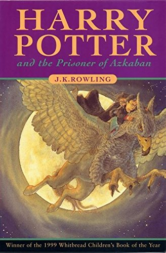

Harry Potter and the Sorcerer's Stone

Harry Potter and the Philosopher's Stone is the first novel in the Harry Potter series written by J.K Rowling. The book was first published on 26 June, 1997[1] by Bloomsbury in London, and was later made into a film of the same name.
The book was released in the United States under the name Harry Potter and the Sorcerer's Stone because the publishers were concerned that most American readers would not be familiar enough with the term "Philosopher's Stone". However, this decision led to criticism by the British public who felt it shouldn't be changed due to the fact it was an English book.
Harry Potter has never played a sport while flying on a broomstick. He's never worn a Cloak of Invisibility, befriended a half-giant, or helped hatch a dragon. All Harry knows is a miserable life with the Dursleys, his horrible aunt and uncle, and their abominable son, Dudley. Harry's room is a tiny Cupboard Under the Stairs, he hasn't had a birthday party in ten years, and his birthday present is his uncle's old socks.
But all that is about to change when a mysterious letter arrives by owl messenger. A letter with an invitation to a wonderful place he never dreamed existed. There he finds not only friends, aerial sports, and magic around every corner, but a great destiny that's been waiting for him... if Harry can survive the encounter."
Until now there's been no magic for Harry Potter. He lives with the miserable Dursleys and their abominable son, Dudley. Harry's room is a tiny closet beneath the stairs, and he hasn't had a birthday party in ten years. Then a mysterious letter arrives by owl messenger. A letter with an invitation to an incredible place called Hogwarts School of Witchcraft and Wizardry. There he finds not only friends, flying sports on broomsticks, and magic in everything from classes to meals.
Harry Potter thinks he is an ordinary boy - until he is rescued by a beetle-eyed giant of a man, enrols at Hogwarts School of Witchcraft and Wizardry, learns to play Quidditch and does battle in a deadly duel. The Reason, Harry Potter is a wizard!"
Harry Potter and the Chamber of Secrets
Harry Potter and the Chamber of Secrets, by J. K. Rowling, is the sequel to Harry Potter and the Philosopher's Stone. It is the second book in the series of seven Harry Potter books. The book was published in 1998. A film was theatrically released in November 2002.
Ever since Harry Potter had come home for the summer, the Dursleys had been so mean and hideous that all Harry wanted was to get back to the Hogwarts School of Witchcraft and Wizardry. But just as he is packing his bags, Harry receives a warning from a strange impish creature who says that if Harry returns to Hogwarts, disaster will strike.
And strike it does. For in Harry's second year at Hogwarts, fresh torments and horrors arise, including an outrageously stuck-up new professor and a spirit who haunts the girl's bathroom. But then the real trouble begins - something is attacking Hogwarts students, making them rigid like statues. Could it be Draco Malfoy, a more poisonous rival than ever? Could it possibly be Hagrid, whose mysterious past reveals dark secrets? Or could it be the one everyone at Hogwarts most suspects ... Harry Potter himself!
Harry Potter and the Prisoner of Azkaban
Harry Potter and the Prisoner of Azkaban is the third instalment novel in the Harry Potter series written by J. K. Rowling. It was first published in 1999.
Harry Potter is lucky to reach the age of thirteen, since he has already survived the murderous attacks of the feared Dark Lord on more than one occasion. But his hopes for a quiet term concentrating on Quidditch are dashed when a maniacal mass-murderer escapes from Azkaban, pursued by the soul-sucking Dementors who guard the prison. It's assumed that Hogwarts is the safest place for Harry to be. But is it a coincidence that he can feel eyes watching him in the dark, and should he be taking Professor Trelawney's ghoulish predictions seriously?
Harry Potter and the Goblet of Fire

Harry Potter and the Goblet of Fire is the fourth book in the Harry Potter series by J. K. Rowling, published in 2000. A film version of this book was released in November 2005. This book is seen by many fans as the beginning of darker times in the wizarding world, as it shows the return of Voldemort.
Harry Potter is in his fourth year at Hogwarts. Harry wants to get away from the pernicious Dursleys and go to the Quidditch World Cup with Hermione, Ron, and the Weasleys. He wants to find out about the mysterious event to take place at Hogwarts this year, an event involving two other rival schools of magic, and a competition that hasn't happened for hundreds of years. He wants to be a normal, fourteen-year-old wizard. But unfortunately for Harry Potter, he's not normal - not even by Wizarding standards. And in his case, different can be deadly.
Harry Potter and the Order of the Phoenix
Harry Potter and the Order of the Phoenix is the fifth book in J. K. Rowling's Harry Potter book series. It was one of the most widely-anticipated books of the series, since there was a wait of three years between it and the previous book, Goblet of Fire. At 38 chapters, it is also the longest book in the series, having jokingly been labelled as heavier than a refrigerator (by Stephen Fry at the Royal Albert Hall event) and used as a benchmark for the size of the next two books.
Harry is in his fifth year at Hogwarts School as the adventures continue. There is a door at the end of a silent corridor. And it's haunting Harry Potter's dreams. Why else would he be waking in the middle of the night, screaming in terror? Harry has a lot on his mind for this, his fifth year at Hogwarts: a Defence Against the Dark Arts teacher with a personality like poisoned honey; a big surprise on the Gryffindor Quidditch team; and the looming terror of the Ordinary Wizarding Level exams.
But all these things pale next to the growing threat of He-Who-Must-Not-Be-Named, one that neither the magical government nor the authorities at Hogwarts can stop. As the grasp of darkness tightens, Harry must discover the true depth and strength of his friends, the importance of boundless loyalty, and the shocking price of unbearable sacrifice. His fate depends on them all.
The book that took the world by storm. In his fifth year at Hogwarts, Harry faces challenges at every turn, from the dark threat of He-Who-Must-Not-Be-Named and the unreliability of the government of the magical world to the rise of Ron Weasley as the Keeper of the Gryffindor Quidditch Team. Along the way he learns about the strength of his friends, the fierceness of his enemies, and the meaning of sacrifice.
Harry Potter and the Half-blood Prince

Harry Potter and the Half-Blood Prince is the sixth novel in J. K. Rowling's Harry Potter series. Set during Harry Potter's sixth year at Hogwarts, Lord Voldemort is definitely back, and with a vengeance. Harry finds his world is yet again changing: wizards and witches and Muggles alike are dying, despite the efforts of the Ministry of Magic and the Order of the Phoenix. Despite the danger, Harry and his best friends, Ron and Hermione, return to the familiar life of Hogwarts for their sixth year. They find yet another Defence Against the Dark Arts teacher: Professor Snape. They begin their N.E.W.T. classes in preparation for life after Hogwarts, and Harry gets some much needed Potions help from the mysterious Half-Blood Prince. Quidditch is as popular as ever, Harry is nominated as Gryffindor Quidditch Captain.
As well, this book sees the re-introduction of the Slug Club, along with the appointment of a new Potions teacher, Horace Slughorn. Romance again comes to Hogwarts, and is a welcome balance to the grim happenings elsewhere. Harry deeply questions his own feelings for Ginny Weasley, who is Ron's younger sister, while trying to understand the effect it is having on his friends. Yet, while life at Hogwarts continues, the deaths also continue, with several near-fatal incidents occurring at Hogwarts. Danger seems to lurk around every corner, and Harry is as determined as ever to unmask it. Albus Dumbledore takes Harry under his guidance and together they explore Lord Voldemort's past, to find a way to stop him before it is too late. Ultimately, Harry realises he must accepts his role as The Chosen One, and his destiny to either kill or be killed by Voldemort, as neither can live while the other survives. They all must choose between what is right and what is easy.
When released on 16 July, 2005, Harry Potter and the Half-Blood Prince was the first book in the United Kingdom to have a simultaneous standard print, large print, and Braille edition release. Within the first 24 hours, it sold 6.9 million copies in the U.S. alone, roughly moving 250,000 an hour, making it the fastest selling book in history. It generated more than $100 million in sales out of the gate, outpacing even the combined take of the top films at the box office. Bookseller Barnes and Noble reported sales averaging 105 copies per second in the first hour of sales. It is also the first book in the series to be shorter than the book preceding it.
It is Harry Potter 's sixth year at Hogwarts School of Witchcraft and Wizardry. As Voldemort's sinister forces amass and a spirit of gloom and fear sweeps the land, it becomes more and more clear to Harry that he will soon have to confront his destiny. But is he up to the challenges ahead of him?
Raincoast Bloomsbury edition
It is the middle of the summer, but there is an unseasonal mist pressing against the window panes. Harry Potter is waiting nervously in his bedroom at the Dursleys' house in Privet Drive for a visit from Professor Dumbledore himself. One of the last times he saw the Headmaster was in a fierce one-to-one duel with Lord Voldemort, and Harry can't quite believe that Professor Dumbledore will actually appear at the Dursleys' of all places. Why is the Professor coming to visit him now? What is it that cannot wait until Harry returns to Hogwarts in a few weeks' time? Harry's sixth year at Hogwarts has already got off to an unusual start, as the worlds of Muggle and magic start to intertwine...
Harry Potter and the Deathly Hallows
Harry Potter and the Deathly Hallows is the seventh and final book in the Harry Potter series by J. K. Rowling. It was released on 21 July, 2007 at 00:01 am local time in English-speaking countries.
Harry is waiting in Privet Drive. The Order of the Phoenix is coming to escort him safely away without Voldemort and his supporters knowing - if they can. But what will Harry do then? How can he fulfil the momentous and seemingly impossible task that Professor Dumbledore has left him?
As he travels Harry discovers that a battle is breaking out at Hogwarts. He has to do anything to stop it even if that involves killing himself.